Last updated: 2026-06-16
Checks: 7 0
Knit directory: susie_love_experiments/
This reproducible R Markdown analysis was created with workflowr (version 1.7.1). The Checks tab describes the reproducibility checks that were applied when the results were created. The Past versions tab lists the development history.
Great! Since the R Markdown file has been committed to the Git repository, you know the exact version of the code that produced these results.
Great job! The global environment was empty. Objects defined in the global environment can affect the analysis in your R Markdown file in unknown ways. For reproduciblity it’s best to always run the code in an empty environment.
The command set.seed(20260419) was run prior to running
the code in the R Markdown file. Setting a seed ensures that any results
that rely on randomness, e.g. subsampling or permutations, are
reproducible.
Great job! Recording the operating system, R version, and package versions is critical for reproducibility.
Nice! There were no cached chunks for this analysis, so you can be confident that you successfully produced the results during this run.
Great job! Using relative paths to the files within your workflowr project makes it easier to run your code on other machines.
Great! You are using Git for version control. Tracking code development and connecting the code version to the results is critical for reproducibility.
The results in this page were generated with repository version 249df60. See the Past versions tab to see a history of the changes made to the R Markdown and HTML files.
Note that you need to be careful to ensure that all relevant files for
the analysis have been committed to Git prior to generating the results
(you can use wflow_publish or
wflow_git_commit). workflowr only checks the R Markdown
file, but you know if there are other scripts or data files that it
depends on. Below is the status of the Git repository when the results
were generated:
Ignored files:
Ignored: .DS_Store
Ignored: .Rproj.user/
Ignored: analysis/.DS_Store
Ignored: analysis/figure/
Unstaged changes:
Modified: analysis/algorithmic-approach.Rmd
Modified: analysis/small_nu.Rmd
Note that any generated files, e.g. HTML, png, CSS, etc., are not included in this status report because it is ok for generated content to have uncommitted changes.
These are the previous versions of the repository in which changes were
made to the R Markdown
(analysis/mismatch_fix_delta_approach.Rmd) and HTML
(docs/mismatch_fix_delta_approach.html) files. If you’ve
configured a remote Git repository (see ?wflow_git_remote),
click on the hyperlinks in the table below to view the files as they
were in that past version.
| File | Version | Author | Date | Message |
|---|---|---|---|---|
| Rmd | 249df60 | dodat-stats | 2026-06-16 | add susie-love-delta for too mismatch case |
We investigate to see if using a very mismatched R0 leads to small \(\nu_0\).
sim_asn_eur <- function(chrom, start, end, n_gwas, n_ref, J, h2, seed) {
stdpopsim <- reticulate::import("stdpopsim")
msprime <- reticulate::import("msprime")
set.seed(seed)
# 1. Get Realistic Genetic Map from stdpopsim
species <- stdpopsim$get_species("HomSap")
contig <- species$get_contig(chrom, left = as.integer(start), right = as.integer(end))
# 2. Get OutOfAfrica_3G09 Demography (YRI, CEU, CHB)
demo_model <- species$get_demographic_model("OutOfAfrica_3G09")
demography <- demo_model$model
# 3. Run Simulation
ts <- msprime$sim_ancestry(
samples = reticulate::dict(CHB = as.integer(n_gwas), CEU = as.integer(n_ref)),
demography = demography,
recombination_rate = contig$recombination_map,
random_seed = as.integer(seed)
)
ts <- msprime$sim_mutations(ts, rate = 1.29e-8, random_seed = as.integer(seed))
# 4. Extract Genotypes
chb_id <- NULL
ceu_id <- NULL
for (p in reticulate::iterate(ts$populations())) {
if (!is.null(p$metadata) && p$metadata$name == "CHB") chb_id <- p$id
if (!is.null(p$metadata) && p$metadata$name == "CEU") ceu_id <- p$id
}
samples_gwas <- ts$samples(population = as.integer(chb_id))
samples_ref <- ts$samples(population = as.integer(ceu_id))
G_all <- ts$genotype_matrix()
to_diploid <- function(hap_idx) {
idx <- as.integer(hap_idx) + 1
g_hap <- G_all[, idx, drop = FALSE]
g_dip <- g_hap[, seq(1, ncol(g_hap), by = 2)] + g_hap[, seq(2, ncol(g_hap), by = 2)]
return(t(g_dip))
}
G_gwas <- to_diploid(samples_gwas)
G_ref <- to_diploid(samples_ref)
# 5. Filter for Common Variants (MAF > 5%)
maf_gwas <- colMeans(G_gwas) / 2
maf_ref <- colMeans(G_ref) / 2
common_mask <- (maf_gwas > 0.05) & (maf_gwas < 0.95) & (maf_ref > 0.05) & (maf_ref < 0.95)
n_common <- sum(common_mask)
if (n_common < J) stop(paste0("Only ", n_common, " common variants found but J = ", J, ". Try a larger region."))
G_gwas <- G_gwas[, common_mask, drop = FALSE]
G_ref <- G_ref[, common_mask, drop = FALSE]
J_all <- min(ncol(G_gwas), J)
max_start <- J_all - J
start_idx <- if (max_start > 0) sample(0:max_start, 1) else 0
cols_to_keep <- (start_idx + 1):(start_idx + J)
G <- G_gwas[, cols_to_keep, drop = FALSE]
G0 <- G_ref[, cols_to_keep, drop = FALSE]
# 6. Generate summary stats
X <- sweep(G, 2, colMeans(G), "-")
N <- nrow(X)
G0_centered <- sweep(G0, 2, colMeans(G0), "-")
R0 <- stats::cov(G0_centered)
R0[is.na(R0)] <- 0
R <- stats::cov(X)
R[is.na(R)] <- 0
num_causal <- 2
first_causal_SNP <- sample(1:J, 1)
second_causal_SNP <- which.min(R[first_causal_SNP, ]^2)
causal_SNPs_loc <- c(first_causal_SNP, second_causal_SNP)
beta_true <- rep(0, J)
beta_true[causal_SNPs_loc] <- stats::runif(num_causal) + 0.01
var_expl <- sum((X %*% beta_true)^2 / N)
scale <- h2 / var_expl
beta_true <- beta_true * sqrt(scale)
y <- (X %*% beta_true) + sqrt(1 - h2) * stats::rnorm(N)
y_std <- sqrt(sum((y - mean(y))^2) / N)
y <- (y - mean(y)) / y_std
v <- (t(X) %*% y) / N
return(list(
v = as.vector(v),
R = R,
R0 = R0,
beta_true = beta_true,
causal_SNPs_loc = causal_SNPs_loc
))
}
seed = 2
chrom <- "chr22"
start <- 20e6
end <- 21e6
N <- 25000L
N0 = 500L
J <- 500L
h2 <- 0.01
res <- sim_asn_eur(chrom, start, end,
n_gwas = N,
n_ref = N0,
J = J,
h2 = h2,
seed = seed)
v <- res$v
R <- res$R
R0 <- res$R0
beta_true <- res$beta_true
causal_SNPs_loc <- res$causal_SNPs_loc
## standardized
d = 1 / sqrt(diag(R))
v = d * v
R = cov2cor(R)
R0 = cov2cor(R0)
plot(v, pch = 16)
points(causal_SNPs_loc, v[causal_SNPs_loc], pch = 16, col = "red")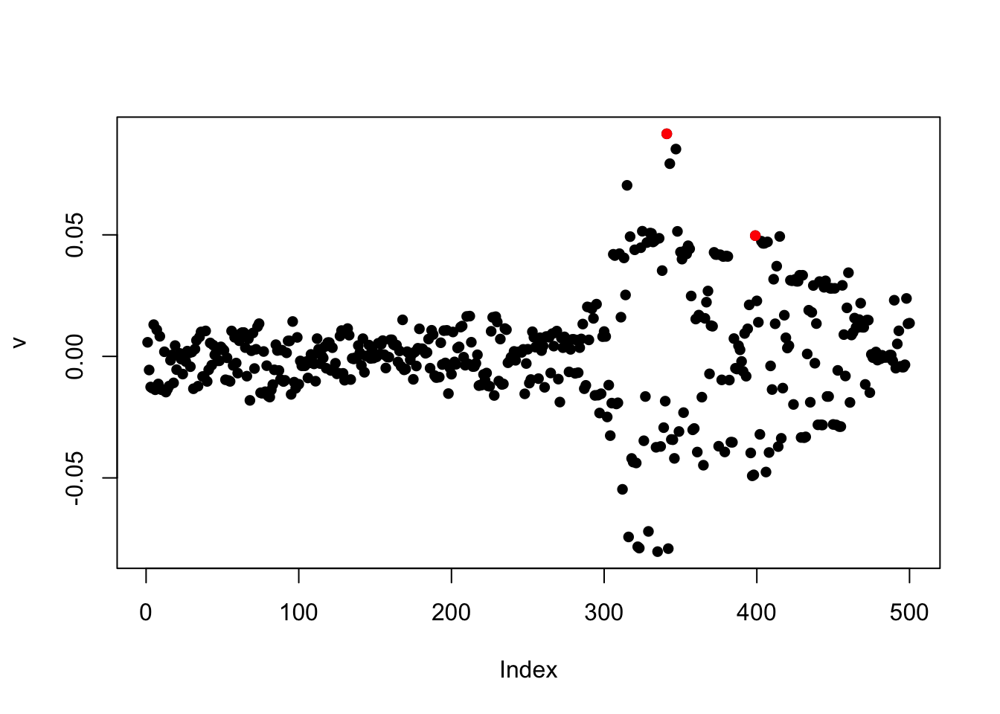
Sorry the color scheme is a bit hard to see but if we squeeze our eyes a bit then we can see that the two matrices are different.
par(mfrow = c(1, 2))
image(R0[1:100, 1:100], main = "Out-of-sample (EUR)", col = heat.colors(15))
image(R[1:100, 1:100], main = "In-sample corr (CHB)", col = heat.colors(15))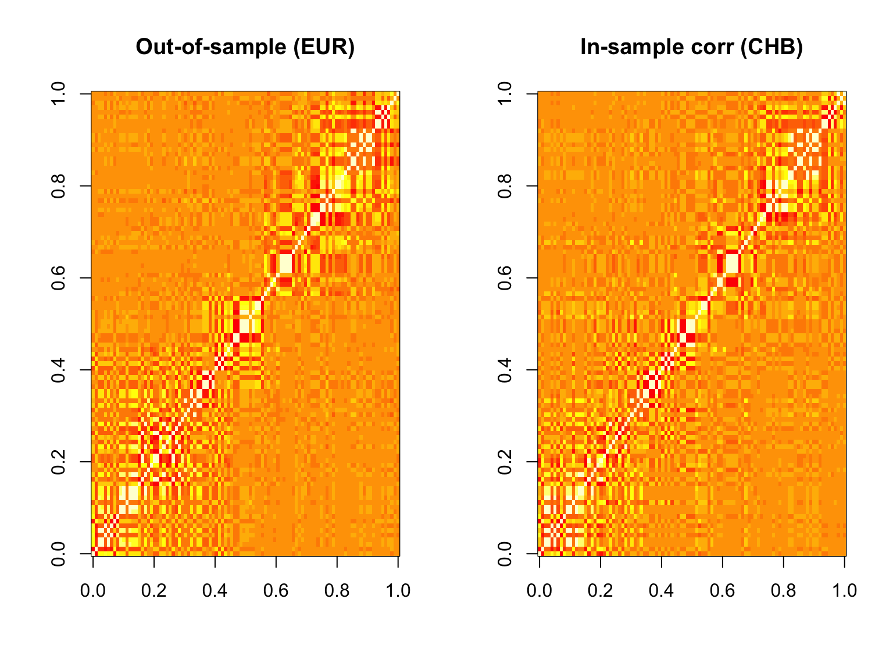
par(mfrow = c(1, 1))library(susieR)
#> Warning: package 'susieR' was built under R version 4.3.3
fit <- susie_suff_stat(
XtX = N * R,
Xty = N * v,
n = N,
yty = N
)
susie_plot(fit, y = "PIP", b = beta_true, main = "In-sample cov mat")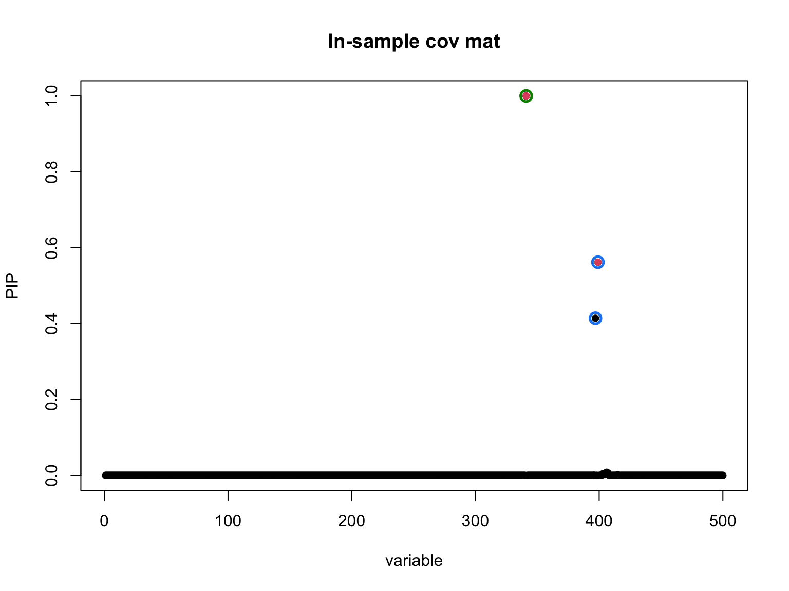
library(susieR)
fit_R0 <- susie_suff_stat(
XtX = N * R0,
Xty = N * v,
n = N,
yty = N
)
susie_plot(fit_R0, y = "PIP", b = beta_true, main = "Out-of-sample cov mat")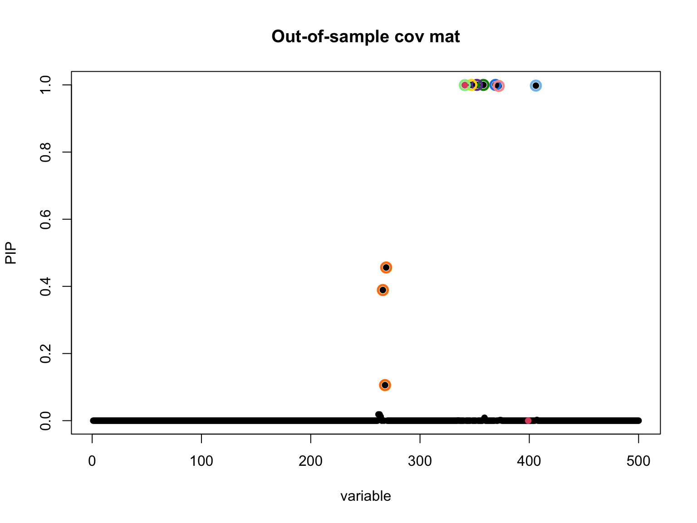
library(susielove)
diag_R <- rep(1, J)
R_out <- R0
k <- min(min(N0, J), 200)
delta <- 1Each grid point is warm-started with Z_final from its
left neighbour so the 10-iteration budget reflects the actual profile
loss rather than the cold-start transient.
nu_0_grid <- exp(seq(log(10), log(5 * N0), length.out = 10))
coarse_results <- vector("list", length(nu_0_grid))
z_prev <- NULL
for (i in seq_along(nu_0_grid)) {
coarse_results[[i]] <- susie_XL(v, R_out, diag_R, delta, N, L = 5, k,
nu_0_init = nu_0_grid[i],
z_init = z_prev,
estimate_nu_0 = FALSE,
max_iter_init = 100,
step_susie = 1,
step_R = 100,
max_iter = 10,
tol = -Inf)
z_prev <- coarse_results[[i]]$Z_final
}
#> Iter 1 | Loss: 10.9594 | nu_q: 10.7 | nu_0: 10.0 | delta: 1.0000e+00
#> Iter 2 | Loss: 9.4674 | nu_q: 11.3 | nu_0: 10.0 | delta: 1.0000e+00
#> Iter 3 | Loss: 8.8769 | nu_q: 11.8 | nu_0: 10.0 | delta: 1.0000e+00
#> Iter 4 | Loss: 8.4446 | nu_q: 12.3 | nu_0: 10.0 | delta: 1.0000e+00
#> Iter 5 | Loss: 8.1343 | nu_q: 12.7 | nu_0: 10.0 | delta: 1.0000e+00
#> Iter 6 | Loss: 7.8961 | nu_q: 13.1 | nu_0: 10.0 | delta: 1.0000e+00
#> Iter 7 | Loss: 7.7120 | nu_q: 13.4 | nu_0: 10.0 | delta: 1.0000e+00
#> Iter 8 | Loss: 7.5644 | nu_q: 13.8 | nu_0: 10.0 | delta: 1.0000e+00
#> Iter 9 | Loss: 7.4436 | nu_q: 14.1 | nu_0: 10.0 | delta: 1.0000e+00
#> Iter 10 | Loss: 7.3430 | nu_q: 14.3 | nu_0: 10.0 | delta: 1.0000e+00
#> Iter 1 | Loss: 5.7192 | nu_q: 19.2 | nu_0: 18.5 | delta: 1.0000e+00
#> Iter 2 | Loss: 5.4263 | nu_q: 19.8 | nu_0: 18.5 | delta: 1.0000e+00
#> Iter 3 | Loss: 5.2107 | nu_q: 20.4 | nu_0: 18.5 | delta: 1.0000e+00
#> Iter 4 | Loss: 5.0479 | nu_q: 20.9 | nu_0: 18.5 | delta: 1.0000e+00
#> Iter 5 | Loss: 4.9226 | nu_q: 21.4 | nu_0: 18.5 | delta: 1.0000e+00
#> Iter 6 | Loss: 4.8251 | nu_q: 21.8 | nu_0: 18.5 | delta: 1.0000e+00
#> Iter 7 | Loss: 4.7483 | nu_q: 22.2 | nu_0: 18.5 | delta: 1.0000e+00
#> Iter 8 | Loss: 4.6873 | nu_q: 22.5 | nu_0: 18.5 | delta: 1.0000e+00
#> Iter 9 | Loss: 4.6380 | nu_q: 22.8 | nu_0: 18.5 | delta: 1.0000e+00
#> Iter 10 | Loss: 4.5980 | nu_q: 23.1 | nu_0: 18.5 | delta: 1.0000e+00
#> Iter 1 | Loss: 4.1786 | nu_q: 34.9 | nu_0: 34.1 | delta: 1.0000e+00
#> Iter 2 | Loss: 4.0657 | nu_q: 35.7 | nu_0: 34.1 | delta: 1.0000e+00
#> Iter 3 | Loss: 3.9812 | nu_q: 36.3 | nu_0: 34.1 | delta: 1.0000e+00
#> Iter 4 | Loss: 3.9162 | nu_q: 36.9 | nu_0: 34.1 | delta: 1.0000e+00
#> Iter 5 | Loss: 3.8659 | nu_q: 37.4 | nu_0: 34.1 | delta: 1.0000e+00
#> Iter 6 | Loss: 3.8265 | nu_q: 37.9 | nu_0: 34.1 | delta: 1.0000e+00
#> Iter 7 | Loss: 3.7955 | nu_q: 38.3 | nu_0: 34.1 | delta: 1.0000e+00
#> Iter 8 | Loss: 3.7711 | nu_q: 38.7 | nu_0: 34.1 | delta: 1.0000e+00
#> Iter 9 | Loss: 3.7517 | nu_q: 39.1 | nu_0: 34.1 | delta: 1.0000e+00
#> Iter 10 | Loss: 3.7360 | nu_q: 39.4 | nu_0: 34.1 | delta: 1.0000e+00
#> Iter 1 | Loss: 5.4294 | nu_q: 64.0 | nu_0: 63.0 | delta: 1.0000e+00
#> Iter 2 | Loss: 5.3778 | nu_q: 64.9 | nu_0: 63.0 | delta: 1.0000e+00
#> Iter 3 | Loss: 5.3421 | nu_q: 65.7 | nu_0: 63.0 | delta: 1.0000e+00
#> Iter 4 | Loss: 5.3151 | nu_q: 66.4 | nu_0: 63.0 | delta: 1.0000e+00
#> Iter 5 | Loss: 5.2941 | nu_q: 67.0 | nu_0: 63.0 | delta: 1.0000e+00
#> Iter 6 | Loss: 5.2779 | nu_q: 67.5 | nu_0: 63.0 | delta: 1.0000e+00
#> Iter 7 | Loss: 5.2657 | nu_q: 68.0 | nu_0: 63.0 | delta: 1.0000e+00
#> Iter 8 | Loss: 5.2562 | nu_q: 68.4 | nu_0: 63.0 | delta: 1.0000e+00
#> Iter 9 | Loss: 5.2491 | nu_q: 68.8 | nu_0: 63.0 | delta: 1.0000e+00
#> Iter 10 | Loss: 5.2436 | nu_q: 69.1 | nu_0: 63.0 | delta: 1.0000e+00
#> Iter 1 | Loss: 10.3367 | nu_q: 117.7 | nu_0: 116.3 | delta: 1.0000e+00
#> Iter 2 | Loss: 10.3063 | nu_q: 118.8 | nu_0: 116.3 | delta: 1.0000e+00
#> Iter 3 | Loss: 10.2900 | nu_q: 119.8 | nu_0: 116.3 | delta: 1.0000e+00
#> Iter 4 | Loss: 10.2788 | nu_q: 120.6 | nu_0: 116.3 | delta: 1.0000e+00
#> Iter 5 | Loss: 10.2707 | nu_q: 121.3 | nu_0: 116.3 | delta: 1.0000e+00
#> Iter 6 | Loss: 10.2650 | nu_q: 121.9 | nu_0: 116.3 | delta: 1.0000e+00
#> Iter 7 | Loss: 10.2608 | nu_q: 122.4 | nu_0: 116.3 | delta: 1.0000e+00
#> Iter 8 | Loss: 10.2578 | nu_q: 122.9 | nu_0: 116.3 | delta: 1.0000e+00
#> Iter 9 | Loss: 10.2557 | nu_q: 123.2 | nu_0: 116.3 | delta: 1.0000e+00
#> Iter 10 | Loss: 10.2541 | nu_q: 123.6 | nu_0: 116.3 | delta: 1.0000e+00
#> Iter 1 | Loss: 20.9560 | nu_q: 216.6 | nu_0: 214.9 | delta: 1.0000e+00
#> Iter 2 | Loss: 20.9275 | nu_q: 218.1 | nu_0: 214.9 | delta: 1.0000e+00
#> Iter 3 | Loss: 20.9165 | nu_q: 219.4 | nu_0: 214.9 | delta: 1.0000e+00
#> Iter 4 | Loss: 20.9115 | nu_q: 220.4 | nu_0: 214.9 | delta: 1.0000e+00
#> Iter 5 | Loss: 20.9086 | nu_q: 221.2 | nu_0: 214.9 | delta: 1.0000e+00
#> Iter 6 | Loss: 20.9068 | nu_q: 221.8 | nu_0: 214.9 | delta: 1.0000e+00
#> Iter 7 | Loss: 20.9056 | nu_q: 222.3 | nu_0: 214.9 | delta: 1.0000e+00
#> Iter 8 | Loss: 20.9049 | nu_q: 222.7 | nu_0: 214.9 | delta: 1.0000e+00
#> Iter 9 | Loss: 20.9045 | nu_q: 223.0 | nu_0: 214.9 | delta: 1.0000e+00
#> Iter 10 | Loss: 20.9042 | nu_q: 223.2 | nu_0: 214.9 | delta: 1.0000e+00
#> Iter 1 | Loss: 41.5213 | nu_q: 399.7 | nu_0: 396.9 | delta: 1.0000e+00
#> Iter 2 | Loss: 41.4801 | nu_q: 401.5 | nu_0: 396.9 | delta: 1.0000e+00
#> Iter 3 | Loss: 41.4715 | nu_q: 402.9 | nu_0: 396.9 | delta: 1.0000e+00
#> Iter 4 | Loss: 41.4687 | nu_q: 404.0 | nu_0: 396.9 | delta: 1.0000e+00
#> Iter 5 | Loss: 41.4678 | nu_q: 404.7 | nu_0: 396.9 | delta: 1.0000e+00
#> Iter 6 | Loss: 41.4674 | nu_q: 405.3 | nu_0: 396.9 | delta: 1.0000e+00
#> Iter 7 | Loss: 41.4673 | nu_q: 405.5 | nu_0: 396.9 | delta: 1.0000e+00
#> Iter 8 | Loss: 41.4673 | nu_q: 405.6 | nu_0: 396.9 | delta: 1.0000e+00
#> Iter 9 | Loss: 41.4672 | nu_q: 405.8 | nu_0: 396.9 | delta: 1.0000e+00
#> Iter 10 | Loss: 41.4672 | nu_q: 405.8 | nu_0: 396.9 | delta: 1.0000e+00
#> Iter 1 | Loss: 81.2738 | nu_q: 736.7 | nu_0: 732.9 | delta: 1.0000e+00
#> Iter 2 | Loss: 81.1802 | nu_q: 738.8 | nu_0: 732.9 | delta: 1.0000e+00
#> Iter 3 | Loss: 81.1550 | nu_q: 740.4 | nu_0: 732.9 | delta: 1.0000e+00
#> Iter 4 | Loss: 81.1366 | nu_q: 741.5 | nu_0: 732.9 | delta: 1.0000e+00
#> Iter 5 | Loss: 81.1267 | nu_q: 742.2 | nu_0: 732.9 | delta: 1.0000e+00
#> Iter 6 | Loss: 81.1218 | nu_q: 742.7 | nu_0: 732.9 | delta: 1.0000e+00
#> Iter 7 | Loss: 81.1188 | nu_q: 743.0 | nu_0: 732.9 | delta: 1.0000e+00
#> Iter 8 | Loss: 81.1169 | nu_q: 743.2 | nu_0: 732.9 | delta: 1.0000e+00
#> Iter 9 | Loss: 81.1160 | nu_q: 743.4 | nu_0: 732.9 | delta: 1.0000e+00
#> Iter 10 | Loss: 81.1157 | nu_q: 743.5 | nu_0: 732.9 | delta: 1.0000e+00
#> Iter 1 | Loss: 158.9113 | nu_q: 1360.6 | nu_0: 1353.6 | delta: 1.0000e+00
#> Iter 2 | Loss: 158.6437 | nu_q: 1361.1 | nu_0: 1353.6 | delta: 1.0000e+00
#> Iter 3 | Loss: 158.5521 | nu_q: 1362.7 | nu_0: 1353.6 | delta: 1.0000e+00
#> Iter 4 | Loss: 158.5054 | nu_q: 1364.1 | nu_0: 1353.6 | delta: 1.0000e+00
#> Iter 5 | Loss: 158.4806 | nu_q: 1364.8 | nu_0: 1353.6 | delta: 1.0000e+00
#> Iter 6 | Loss: 158.4646 | nu_q: 1365.6 | nu_0: 1353.6 | delta: 1.0000e+00
#> Iter 7 | Loss: 158.4515 | nu_q: 1365.6 | nu_0: 1353.6 | delta: 1.0000e+00
#> Iter 8 | Loss: 158.4438 | nu_q: 1366.1 | nu_0: 1353.6 | delta: 1.0000e+00
#> Iter 9 | Loss: 158.4384 | nu_q: 1366.2 | nu_0: 1353.6 | delta: 1.0000e+00
#> Iter 10 | Loss: 158.4382 | nu_q: 1366.2 | nu_0: 1353.6 | delta: 1.0000e+00
#> Iter 1 | Loss: 311.1467 | nu_q: 2513.9 | nu_0: 2500.0 | delta: 1.0000e+00
#> Iter 2 | Loss: 310.6950 | nu_q: 2507.6 | nu_0: 2500.0 | delta: 1.0000e+00
#> Iter 3 | Loss: 310.5903 | nu_q: 2514.1 | nu_0: 2500.0 | delta: 1.0000e+00
#> Iter 4 | Loss: 310.5426 | nu_q: 2513.1 | nu_0: 2500.0 | delta: 1.0000e+00
#> Iter 5 | Loss: 310.5128 | nu_q: 2516.1 | nu_0: 2500.0 | delta: 1.0000e+00
#> Iter 6 | Loss: 310.4926 | nu_q: 2515.2 | nu_0: 2500.0 | delta: 1.0000e+00
#> Iter 7 | Loss: 310.4771 | nu_q: 2516.5 | nu_0: 2500.0 | delta: 1.0000e+00
#> Iter 8 | Loss: 310.4646 | nu_q: 2515.4 | nu_0: 2500.0 | delta: 1.0000e+00
#> Iter 9 | Loss: 310.4548 | nu_q: 2516.3 | nu_0: 2500.0 | delta: 1.0000e+00
#> Iter 10 | Loss: 310.4459 | nu_q: 2515.5 | nu_0: 2500.0 | delta: 1.0000e+00
coarse_loss <- sapply(coarse_results, function(r) tail(r$loss_history, 1))
best_idx <- which.min(coarse_loss)
plot(nu_0_grid, coarse_loss, log = "x", type = "b", pch = 16,
xlab = "nu_0 (log scale)", ylab = "Loss after 10 iters",
main = "Profile loss — warm-started coarse scan")
abline(v = nu_0_grid[best_idx], col = "red", lty = 2)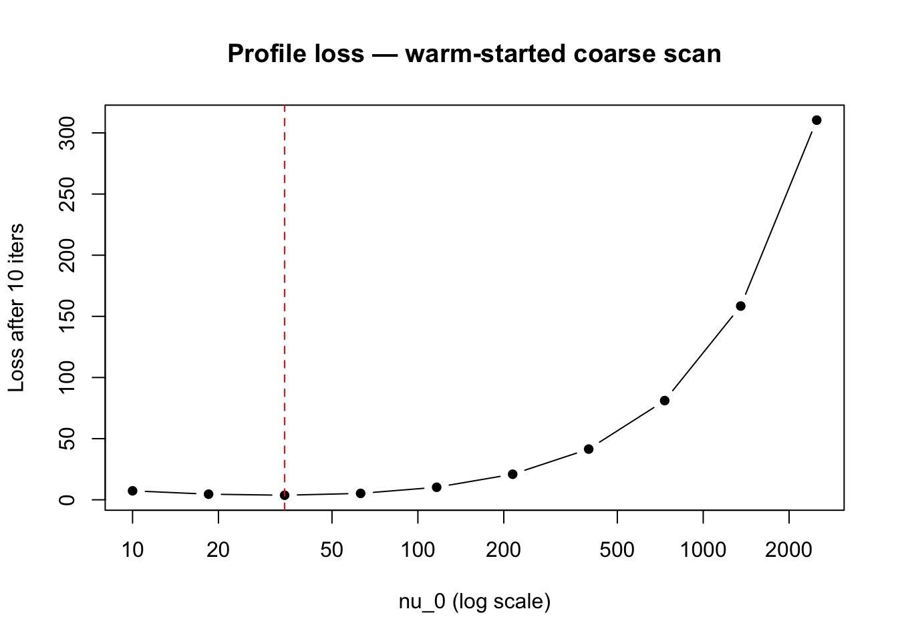
cat("Best nu_0 on grid:", round(nu_0_grid[best_idx], 2),
"| coarse loss:", round(coarse_loss[best_idx], 4), "\n")
#> Best nu_0 on grid: 34.11 | coarse loss: 3.736best_res <- susie_XL(v, R_out, diag_R, delta, N, L = 5, k,
nu_0_init = nu_0_grid[best_idx],
z_init = coarse_results[[best_idx]]$Z_final,
estimate_nu_0 = TRUE,
max_iter_init = 100,
step_susie = 1,
n_inner = 5,
step_R = 100,
max_iter = 100,
tol = 1e-5)
#> Iter 1 | Loss: 3.7147 | nu_q: 36.6 | nu_0: 30.8 | delta: 1.0000e+00
#> Iter 2 | Loss: 3.6699 | nu_q: 37.4 | nu_0: 30.3 | delta: 1.0000e+00
#> Iter 3 | Loss: 3.6625 | nu_q: 37.8 | nu_0: 30.4 | delta: 1.0000e+00
#> Iter 4 | Loss: 3.6594 | nu_q: 38.1 | nu_0: 30.5 | delta: 1.0000e+00
#> Iter 5 | Loss: 3.6575 | nu_q: 38.3 | nu_0: 30.6 | delta: 1.0000e+00
#> Iter 6 | Loss: 3.6562 | nu_q: 38.5 | nu_0: 30.8 | delta: 1.0000e+00
#> Iter 7 | Loss: 3.6553 | nu_q: 38.7 | nu_0: 30.9 | delta: 1.0000e+00
#> Iter 8 | Loss: 3.6546 | nu_q: 38.9 | nu_0: 31.0 | delta: 1.0000e+00
#> Iter 9 | Loss: 3.6540 | nu_q: 39.0 | nu_0: 31.0 | delta: 1.0000e+00
#> Iter 10 | Loss: 3.6536 | nu_q: 39.1 | nu_0: 31.1 | delta: 1.0000e+00
#> Iter 11 | Loss: 3.6533 | nu_q: 39.2 | nu_0: 31.2 | delta: 1.0000e+00
#> Iter 12 | Loss: 3.6532 | nu_q: 39.2 | nu_0: 31.2 | delta: 1.0000e+00
#> Iter 13 | Loss: 3.6532 | nu_q: 39.2 | nu_0: 31.2 | delta: 1.0000e+00
#> Iter 14 | Loss: 3.6532 | nu_q: 39.2 | nu_0: 31.2 | delta: 1.0000e+00
#> Iter 15 | Loss: 3.6532 | nu_q: 39.2 | nu_0: 31.2 | delta: 1.0000e+00
#> Iter 16 | Loss: 3.6531 | nu_q: 39.2 | nu_0: 31.2 | delta: 1.0000e+00
#> Iter 17 | Loss: 3.6531 | nu_q: 39.2 | nu_0: 31.2 | delta: 1.0000e+00
#> Iter 18 | Loss: 3.6531 | nu_q: 39.2 | nu_0: 31.2 | delta: 1.0000e+00
#> Iter 19 | Loss: 3.6531 | nu_q: 39.2 | nu_0: 31.2 | delta: 1.0000e+00
#> Iter 20 | Loss: 3.6531 | nu_q: 39.2 | nu_0: 31.2 | delta: 1.0000e+00
#> Iter 21 | Loss: 3.6531 | nu_q: 39.2 | nu_0: 31.2 | delta: 1.0000e+00
#> Iter 22 | Loss: 3.6531 | nu_q: 39.2 | nu_0: 31.2 | delta: 1.0000e+00
#> Iter 23 | Loss: 3.6530 | nu_q: 39.2 | nu_0: 31.2 | delta: 1.0000e+00
#> Iter 24 | Loss: 3.6530 | nu_q: 39.3 | nu_0: 31.2 | delta: 1.0000e+00
#> Iter 25 | Loss: 3.6530 | nu_q: 39.3 | nu_0: 31.2 | delta: 1.0000e+00
#> Converged at iteration 25
cat("Converged loss:", round(tail(best_res$loss_history, 1), 4),
"| nu_0:", round(best_res$nu_0, 2),
"| nu_q:", round(best_res$nu_q, 2),
"| iters:", length(best_res$loss_history), "\n")
#> Converged loss: 3.653 | nu_0: 31.21 | nu_q: 39.25 | iters: 25
susie_plot_alpha(
alpha = best_res$b_res$alpha,
R = cov2cor(best_res$R_q),
b = beta_true,
main = paste0("SuSiE-XL (CHB/EUR mismatch) | nu_0=", round(best_res$nu_0, 1),
" | nu_q=", round(best_res$nu_q, 1))
)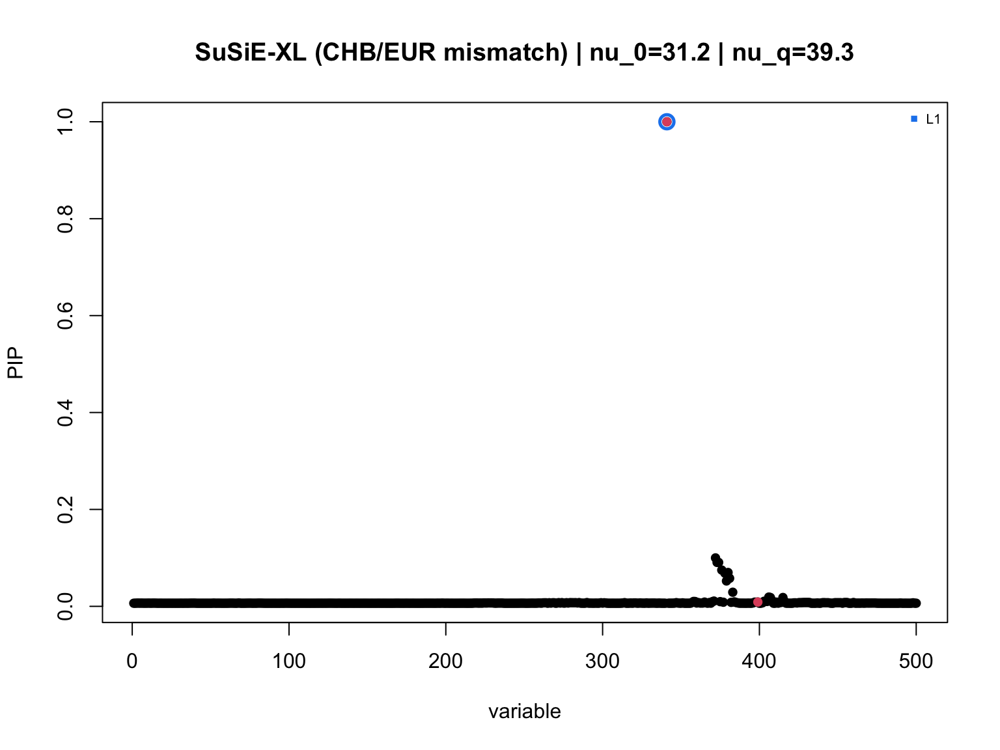
Conclusion: Hence, the susie-love implementation that fixes \(\delta = 1\) and only learn \(\nu_0\) remains conservative when the mismatch is large. Our updated learning strategy using a grid of \(\nu_0\) as a warm-start to choose the good initialization for \(\nu_0\) seems to work pretty well, and it is not too slow, total run time on a Mac M1 is around 1 minute. I will make a computational benchmark later.
There is a catch in the analysis above, which is the way that we constrain the rank k in the low-rank part of the low-rank-plus-diagonal representation of \(R_q\).
Recall that \(R_q\) is parametrized by a unconstrained \(k \times J\) matrix. With \(J = 1000\), this yields \(1000k\) parameters to optimize. Hence, we naturally want \(k\) not to be large. Of course \(k \leq \text{rank}(R_0) \leq \min\{N_0, J\}\).
In the analysis above, \(N_0 = 500, J = 500\) and I further restrict \(k = \min\{N_0, J, 200\}\). Therefore the low-rank part of the \(R_q\) has rank 200.
To my surprise, the result changes when we increase \(k\): The ELBO becomes larger (the loss is smaller), the optimal \(\nu_0\) is larger and leads to more false positive.
Let’s try \(k = 400\) to see this.
library(susielove)
diag_R <- rep(1, J)
R_out <- R0
k <- min(min(N0, J), 400) ## 400
delta <- 1nu_0_grid <- exp(seq(log(10), log(5 * N0), length.out = 10))
coarse_results <- vector("list", length(nu_0_grid))
z_prev <- NULL
for (i in seq_along(nu_0_grid)) {
coarse_results[[i]] <- susie_XL(v, R_out, diag_R, delta, N, L = 5, k,
nu_0_init = nu_0_grid[i],
z_init = z_prev,
estimate_nu_0 = FALSE,
max_iter_init = 100,
step_susie = 1,
step_R = 100,
max_iter = 10,
tol = -Inf)
z_prev <- coarse_results[[i]]$Z_final
}
#> Iter 1 | Loss: 10.6837 | nu_q: 10.7 | nu_0: 10.0 | delta: 1.0000e+00
#> Iter 2 | Loss: 9.1895 | nu_q: 11.3 | nu_0: 10.0 | delta: 1.0000e+00
#> Iter 3 | Loss: 8.6001 | nu_q: 11.8 | nu_0: 10.0 | delta: 1.0000e+00
#> Iter 4 | Loss: 8.1734 | nu_q: 12.3 | nu_0: 10.0 | delta: 1.0000e+00
#> Iter 5 | Loss: 7.8668 | nu_q: 12.7 | nu_0: 10.0 | delta: 1.0000e+00
#> Iter 6 | Loss: 7.6320 | nu_q: 13.1 | nu_0: 10.0 | delta: 1.0000e+00
#> Iter 7 | Loss: 7.4483 | nu_q: 13.4 | nu_0: 10.0 | delta: 1.0000e+00
#> Iter 8 | Loss: 7.3010 | nu_q: 13.8 | nu_0: 10.0 | delta: 1.0000e+00
#> Iter 9 | Loss: 7.1807 | nu_q: 14.0 | nu_0: 10.0 | delta: 1.0000e+00
#> Iter 10 | Loss: 7.0810 | nu_q: 14.3 | nu_0: 10.0 | delta: 1.0000e+00
#> Iter 1 | Loss: 4.9540 | nu_q: 19.2 | nu_0: 18.5 | delta: 1.0000e+00
#> Iter 2 | Loss: 4.6602 | nu_q: 19.8 | nu_0: 18.5 | delta: 1.0000e+00
#> Iter 3 | Loss: 4.4446 | nu_q: 20.4 | nu_0: 18.5 | delta: 1.0000e+00
#> Iter 4 | Loss: 4.2821 | nu_q: 20.9 | nu_0: 18.5 | delta: 1.0000e+00
#> Iter 5 | Loss: 4.1570 | nu_q: 21.4 | nu_0: 18.5 | delta: 1.0000e+00
#> Iter 6 | Loss: 4.0596 | nu_q: 21.8 | nu_0: 18.5 | delta: 1.0000e+00
#> Iter 7 | Loss: 3.9828 | nu_q: 22.2 | nu_0: 18.5 | delta: 1.0000e+00
#> Iter 8 | Loss: 3.9216 | nu_q: 22.5 | nu_0: 18.5 | delta: 1.0000e+00
#> Iter 9 | Loss: 3.8725 | nu_q: 22.8 | nu_0: 18.5 | delta: 1.0000e+00
#> Iter 10 | Loss: 3.8324 | nu_q: 23.1 | nu_0: 18.5 | delta: 1.0000e+00
#> Iter 1 | Loss: 2.1430 | nu_q: 34.9 | nu_0: 34.1 | delta: 1.0000e+00
#> Iter 2 | Loss: 2.0283 | nu_q: 35.7 | nu_0: 34.1 | delta: 1.0000e+00
#> Iter 3 | Loss: 1.9429 | nu_q: 36.3 | nu_0: 34.1 | delta: 1.0000e+00
#> Iter 4 | Loss: 1.8777 | nu_q: 36.9 | nu_0: 34.1 | delta: 1.0000e+00
#> Iter 5 | Loss: 1.8272 | nu_q: 37.4 | nu_0: 34.1 | delta: 1.0000e+00
#> Iter 6 | Loss: 1.7877 | nu_q: 37.9 | nu_0: 34.1 | delta: 1.0000e+00
#> Iter 7 | Loss: 1.7565 | nu_q: 38.3 | nu_0: 34.1 | delta: 1.0000e+00
#> Iter 8 | Loss: 1.7319 | nu_q: 38.7 | nu_0: 34.1 | delta: 1.0000e+00
#> Iter 9 | Loss: 1.7122 | nu_q: 39.1 | nu_0: 34.1 | delta: 1.0000e+00
#> Iter 10 | Loss: 1.6965 | nu_q: 39.4 | nu_0: 34.1 | delta: 1.0000e+00
#> Iter 1 | Loss: 0.5193 | nu_q: 64.0 | nu_0: 63.0 | delta: 1.0000e+00
#> Iter 2 | Loss: 0.4637 | nu_q: 64.9 | nu_0: 63.0 | delta: 1.0000e+00
#> Iter 3 | Loss: 0.4271 | nu_q: 65.6 | nu_0: 63.0 | delta: 1.0000e+00
#> Iter 4 | Loss: 0.3994 | nu_q: 66.3 | nu_0: 63.0 | delta: 1.0000e+00
#> Iter 5 | Loss: 0.3782 | nu_q: 67.0 | nu_0: 63.0 | delta: 1.0000e+00
#> Iter 6 | Loss: 0.3618 | nu_q: 67.5 | nu_0: 63.0 | delta: 1.0000e+00
#> Iter 7 | Loss: 0.3493 | nu_q: 68.0 | nu_0: 63.0 | delta: 1.0000e+00
#> Iter 8 | Loss: 0.3399 | nu_q: 68.4 | nu_0: 63.0 | delta: 1.0000e+00
#> Iter 9 | Loss: 0.3327 | nu_q: 68.8 | nu_0: 63.0 | delta: 1.0000e+00
#> Iter 10 | Loss: 0.3272 | nu_q: 69.1 | nu_0: 63.0 | delta: 1.0000e+00
#> Iter 1 | Loss: -0.4269 | nu_q: 117.6 | nu_0: 116.3 | delta: 1.0000e+00
#> Iter 2 | Loss: -0.4628 | nu_q: 118.8 | nu_0: 116.3 | delta: 1.0000e+00
#> Iter 3 | Loss: -0.4797 | nu_q: 119.8 | nu_0: 116.3 | delta: 1.0000e+00
#> Iter 4 | Loss: -0.4906 | nu_q: 120.6 | nu_0: 116.3 | delta: 1.0000e+00
#> Iter 5 | Loss: -0.4993 | nu_q: 121.3 | nu_0: 116.3 | delta: 1.0000e+00
#> Iter 6 | Loss: -0.5051 | nu_q: 121.9 | nu_0: 116.3 | delta: 1.0000e+00
#> Iter 7 | Loss: -0.5092 | nu_q: 122.4 | nu_0: 116.3 | delta: 1.0000e+00
#> Iter 8 | Loss: -0.5125 | nu_q: 122.8 | nu_0: 116.3 | delta: 1.0000e+00
#> Iter 9 | Loss: -0.5147 | nu_q: 123.2 | nu_0: 116.3 | delta: 1.0000e+00
#> Iter 10 | Loss: -0.5163 | nu_q: 123.5 | nu_0: 116.3 | delta: 1.0000e+00
#> Iter 1 | Loss: -0.8851 | nu_q: 216.4 | nu_0: 214.9 | delta: 1.0000e+00
#> Iter 2 | Loss: -0.9234 | nu_q: 217.9 | nu_0: 214.9 | delta: 1.0000e+00
#> Iter 3 | Loss: -0.9336 | nu_q: 219.2 | nu_0: 214.9 | delta: 1.0000e+00
#> Iter 4 | Loss: -0.9392 | nu_q: 220.2 | nu_0: 214.9 | delta: 1.0000e+00
#> Iter 5 | Loss: -0.9425 | nu_q: 221.0 | nu_0: 214.9 | delta: 1.0000e+00
#> Iter 6 | Loss: -0.9444 | nu_q: 221.6 | nu_0: 214.9 | delta: 1.0000e+00
#> Iter 7 | Loss: -0.9456 | nu_q: 222.1 | nu_0: 214.9 | delta: 1.0000e+00
#> Iter 8 | Loss: -0.9467 | nu_q: 222.6 | nu_0: 214.9 | delta: 1.0000e+00
#> Iter 9 | Loss: -0.9473 | nu_q: 222.9 | nu_0: 214.9 | delta: 1.0000e+00
#> Iter 10 | Loss: -0.9476 | nu_q: 223.1 | nu_0: 214.9 | delta: 1.0000e+00
#> Iter 1 | Loss: -0.8799 | nu_q: 398.7 | nu_0: 396.9 | delta: 1.0000e+00
#> Iter 2 | Loss: -0.9362 | nu_q: 401.1 | nu_0: 396.9 | delta: 1.0000e+00
#> Iter 3 | Loss: -0.9488 | nu_q: 402.5 | nu_0: 396.9 | delta: 1.0000e+00
#> Iter 4 | Loss: -0.9532 | nu_q: 403.7 | nu_0: 396.9 | delta: 1.0000e+00
#> Iter 5 | Loss: -0.9553 | nu_q: 404.4 | nu_0: 396.9 | delta: 1.0000e+00
#> Iter 6 | Loss: -0.9562 | nu_q: 405.1 | nu_0: 396.9 | delta: 1.0000e+00
#> Iter 7 | Loss: -0.9564 | nu_q: 405.5 | nu_0: 396.9 | delta: 1.0000e+00
#> Iter 8 | Loss: -0.9565 | nu_q: 405.6 | nu_0: 396.9 | delta: 1.0000e+00
#> Iter 9 | Loss: -0.9565 | nu_q: 405.7 | nu_0: 396.9 | delta: 1.0000e+00
#> Iter 10 | Loss: -0.9565 | nu_q: 405.7 | nu_0: 396.9 | delta: 1.0000e+00
#> Iter 1 | Loss: -0.2425 | nu_q: 736.2 | nu_0: 732.9 | delta: 1.0000e+00
#> Iter 2 | Loss: -0.3535 | nu_q: 738.4 | nu_0: 732.9 | delta: 1.0000e+00
#> Iter 3 | Loss: -0.3805 | nu_q: 740.1 | nu_0: 732.9 | delta: 1.0000e+00
#> Iter 4 | Loss: -0.4004 | nu_q: 741.3 | nu_0: 732.9 | delta: 1.0000e+00
#> Iter 5 | Loss: -0.4123 | nu_q: 742.1 | nu_0: 732.9 | delta: 1.0000e+00
#> Iter 6 | Loss: -0.4189 | nu_q: 742.5 | nu_0: 732.9 | delta: 1.0000e+00
#> Iter 7 | Loss: -0.4220 | nu_q: 742.9 | nu_0: 732.9 | delta: 1.0000e+00
#> Iter 8 | Loss: -0.4234 | nu_q: 743.3 | nu_0: 732.9 | delta: 1.0000e+00
#> Iter 9 | Loss: -0.4241 | nu_q: 743.5 | nu_0: 732.9 | delta: 1.0000e+00
#> Iter 10 | Loss: -0.4244 | nu_q: 743.5 | nu_0: 732.9 | delta: 1.0000e+00
#> Iter 1 | Loss: 1.6123 | nu_q: 1350.4 | nu_0: 1353.6 | delta: 1.0000e+00
#> Iter 2 | Loss: 1.1852 | nu_q: 1354.6 | nu_0: 1353.6 | delta: 1.0000e+00
#> Iter 3 | Loss: 1.1080 | nu_q: 1361.2 | nu_0: 1353.6 | delta: 1.0000e+00
#> Iter 4 | Loss: 1.0731 | nu_q: 1363.4 | nu_0: 1353.6 | delta: 1.0000e+00
#> Iter 5 | Loss: 1.0577 | nu_q: 1365.0 | nu_0: 1353.6 | delta: 1.0000e+00
#> Iter 6 | Loss: 1.0484 | nu_q: 1365.5 | nu_0: 1353.6 | delta: 1.0000e+00
#> Iter 7 | Loss: 1.0449 | nu_q: 1365.9 | nu_0: 1353.6 | delta: 1.0000e+00
#> Iter 8 | Loss: 1.0439 | nu_q: 1366.0 | nu_0: 1353.6 | delta: 1.0000e+00
#> Iter 9 | Loss: 1.0398 | nu_q: 1366.5 | nu_0: 1353.6 | delta: 1.0000e+00
#> Iter 10 | Loss: 1.0392 | nu_q: 1366.5 | nu_0: 1353.6 | delta: 1.0000e+00
#> Iter 1 | Loss: 5.2753 | nu_q: 2503.3 | nu_0: 2500.0 | delta: 1.0000e+00
#> Iter 2 | Loss: 4.4897 | nu_q: 2501.2 | nu_0: 2500.0 | delta: 1.0000e+00
#> Iter 3 | Loss: 4.3048 | nu_q: 2511.2 | nu_0: 2500.0 | delta: 1.0000e+00
#> Iter 4 | Loss: 4.2425 | nu_q: 2511.5 | nu_0: 2500.0 | delta: 1.0000e+00
#> Iter 5 | Loss: 4.1957 | nu_q: 2514.4 | nu_0: 2500.0 | delta: 1.0000e+00
#> Iter 6 | Loss: 4.1749 | nu_q: 2514.2 | nu_0: 2500.0 | delta: 1.0000e+00
#> Iter 7 | Loss: 4.1627 | nu_q: 2517.6 | nu_0: 2500.0 | delta: 1.0000e+00
#> Iter 8 | Loss: 4.1541 | nu_q: 2516.6 | nu_0: 2500.0 | delta: 1.0000e+00
#> Iter 9 | Loss: 4.1527 | nu_q: 2516.5 | nu_0: 2500.0 | delta: 1.0000e+00
#> Iter 10 | Loss: 4.1526 | nu_q: 2516.5 | nu_0: 2500.0 | delta: 1.0000e+00
coarse_loss <- sapply(coarse_results, function(r) tail(r$loss_history, 1))
best_idx <- which.min(coarse_loss)
plot(nu_0_grid, coarse_loss, log = "x", type = "b", pch = 16,
xlab = "nu_0 (log scale)", ylab = "Loss after 10 iters",
main = "Profile loss — warm-started coarse scan")
abline(v = nu_0_grid[best_idx], col = "red", lty = 2)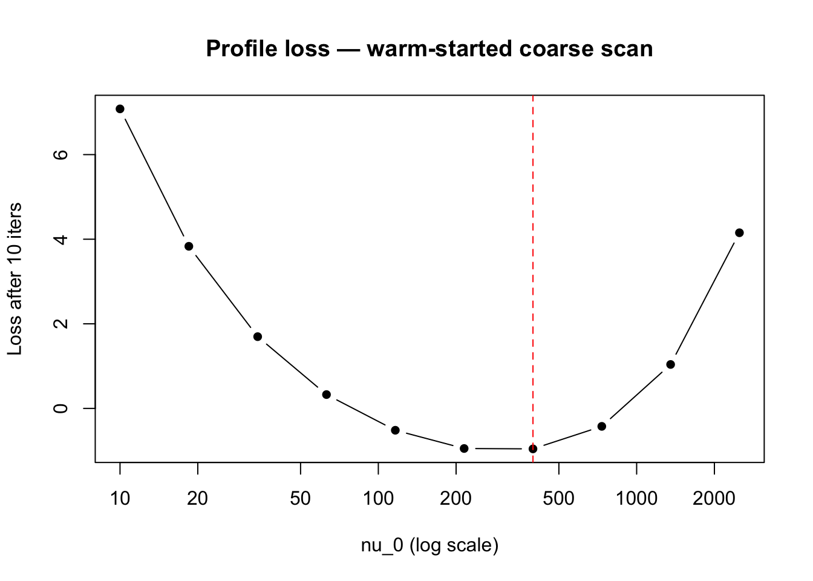
cat("Best nu_0 on grid:", round(nu_0_grid[best_idx], 2),
"| coarse loss:", round(coarse_loss[best_idx], 4), "\n")
#> Best nu_0 on grid: 396.85 | coarse loss: -0.9565best_res <- susie_XL(v, R_out, diag_R, delta, N, L = 5, k,
nu_0_init = nu_0_grid[best_idx],
z_init = coarse_results[[best_idx]]$Z_final,
estimate_nu_0 = TRUE,
max_iter_init = 100,
step_susie = 1,
n_inner = 5,
step_R = 100,
max_iter = 100,
tol = 1e-5)
#> Iter 1 | Loss: -0.9534 | nu_q: 400.2 | nu_0: 389.0 | delta: 1.0000e+00
#> Iter 2 | Loss: -0.9598 | nu_q: 397.4 | nu_0: 385.9 | delta: 1.0000e+00
#> Iter 3 | Loss: -0.9635 | nu_q: 394.7 | nu_0: 383.3 | delta: 1.0000e+00
#> Iter 4 | Loss: -0.9675 | nu_q: 392.3 | nu_0: 380.9 | delta: 1.0000e+00
#> Iter 5 | Loss: -0.9729 | nu_q: 390.3 | nu_0: 379.1 | delta: 1.0000e+00
#> Iter 6 | Loss: -0.9766 | nu_q: 389.0 | nu_0: 378.0 | delta: 1.0000e+00
#> Iter 7 | Loss: -0.9800 | nu_q: 387.2 | nu_0: 376.1 | delta: 1.0000e+00
#> Iter 8 | Loss: -0.9822 | nu_q: 385.4 | nu_0: 374.2 | delta: 1.0000e+00
#> Iter 9 | Loss: -0.9838 | nu_q: 383.6 | nu_0: 372.5 | delta: 1.0000e+00
#> Iter 10 | Loss: -0.9852 | nu_q: 382.1 | nu_0: 371.0 | delta: 1.0000e+00
#> Iter 11 | Loss: -0.9865 | nu_q: 380.8 | nu_0: 369.7 | delta: 1.0000e+00
#> Iter 12 | Loss: -0.9872 | nu_q: 379.5 | nu_0: 368.7 | delta: 1.0000e+00
#> Iter 13 | Loss: -0.9881 | nu_q: 378.4 | nu_0: 367.5 | delta: 1.0000e+00
#> Iter 14 | Loss: -0.9887 | nu_q: 377.3 | nu_0: 366.4 | delta: 1.0000e+00
#> Iter 15 | Loss: -0.9893 | nu_q: 376.2 | nu_0: 365.4 | delta: 1.0000e+00
#> Iter 16 | Loss: -0.9901 | nu_q: 375.1 | nu_0: 364.3 | delta: 1.0000e+00
#> Iter 17 | Loss: -0.9912 | nu_q: 373.9 | nu_0: 363.0 | delta: 1.0000e+00
#> Iter 18 | Loss: -0.9917 | nu_q: 372.8 | nu_0: 362.0 | delta: 1.0000e+00
#> Iter 19 | Loss: -0.9923 | nu_q: 371.8 | nu_0: 361.0 | delta: 1.0000e+00
#> Iter 20 | Loss: -0.9927 | nu_q: 370.9 | nu_0: 360.2 | delta: 1.0000e+00
#> Iter 21 | Loss: -0.9934 | nu_q: 369.9 | nu_0: 359.1 | delta: 1.0000e+00
#> Iter 22 | Loss: -0.9939 | nu_q: 368.9 | nu_0: 358.2 | delta: 1.0000e+00
#> Iter 23 | Loss: -0.9943 | nu_q: 368.1 | nu_0: 357.4 | delta: 1.0000e+00
#> Iter 24 | Loss: -0.9951 | nu_q: 366.8 | nu_0: 356.1 | delta: 1.0000e+00
#> Iter 25 | Loss: -0.9955 | nu_q: 366.0 | nu_0: 355.4 | delta: 1.0000e+00
#> Iter 26 | Loss: -0.9955 | nu_q: 365.8 | nu_0: 355.3 | delta: 1.0000e+00
#> Iter 27 | Loss: -0.9955 | nu_q: 365.8 | nu_0: 355.2 | delta: 1.0000e+00
#> Converged at iteration 27
cat("Converged loss:", round(tail(best_res$loss_history, 1), 4),
"| nu_0:", round(best_res$nu_0, 2),
"| nu_q:", round(best_res$nu_q, 2),
"| iters:", length(best_res$loss_history), "\n")
#> Converged loss: -0.9955 | nu_0: 355.23 | nu_q: 365.79 | iters: 27
susie_plot_alpha(
alpha = best_res$b_res$alpha,
R = cov2cor(best_res$R_q),
b = beta_true,
main = paste0("SuSiE-XL (CHB/EUR mismatch) | nu_0=", round(best_res$nu_0, 1),
" | nu_q=", round(best_res$nu_q, 1))
)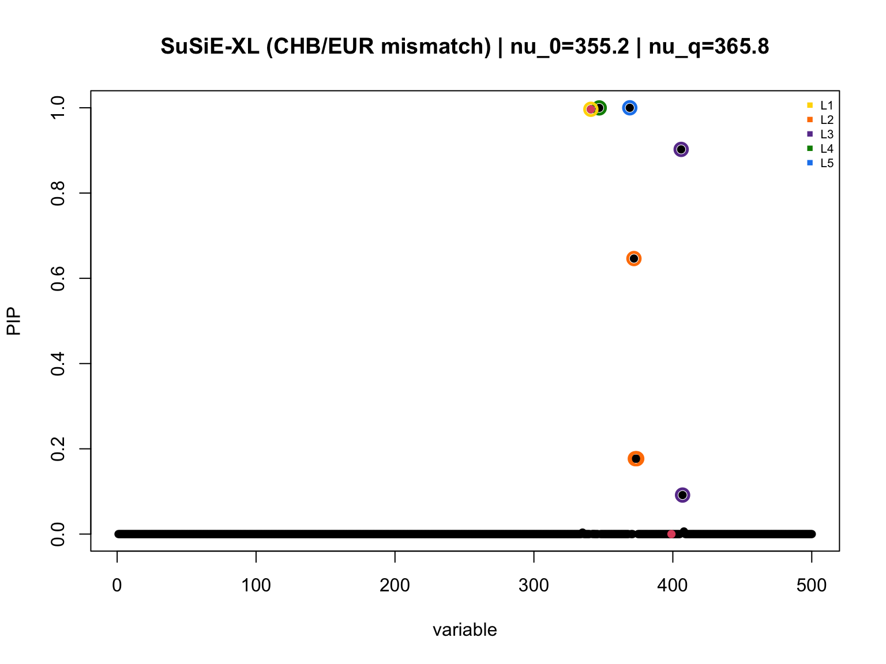
\(k\) should be tuned to depend on the rank of \(R_0\). Let’s investigate the eigenvalues of \(R_0\):
eig_vals_R0 = eigen(R0)$values
plot(c(1:J), eig_vals_R0, pch = 16, cex = .5)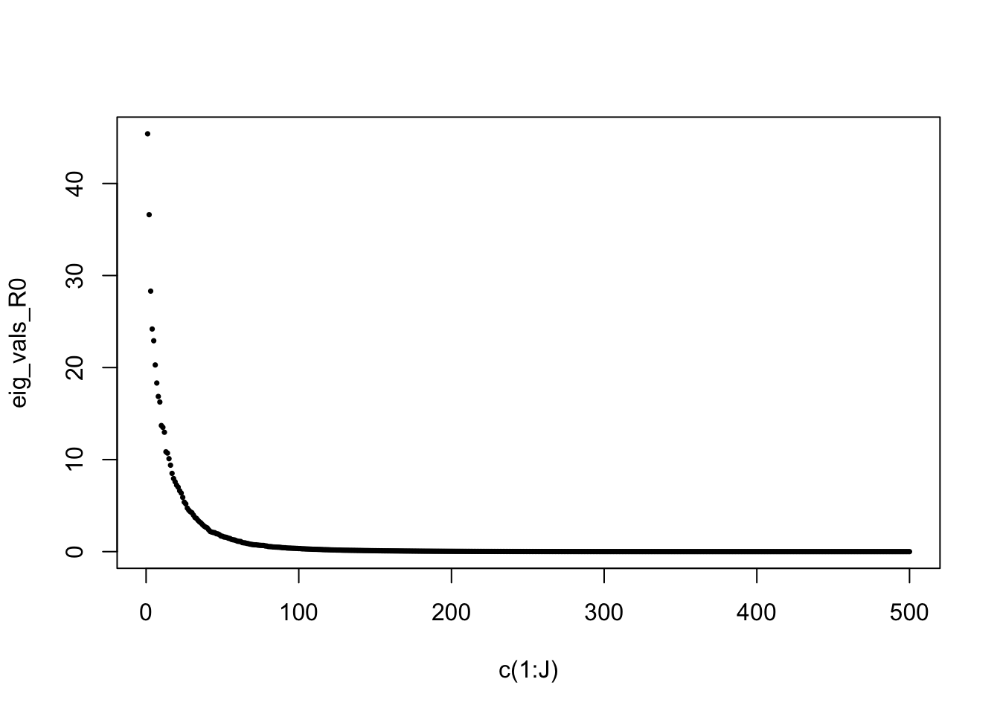
From the plot, it should be reasonable to say that \(k = 100\) (or at most 200) suffices for the low-rank part in the low-rank-plus-diag of \(R_0\) (and \(R_q\)). We now verify this by comparing how well the rank-\(k\) variational family can approximate the prior at \(\nu_0 = \nu_q = 500\).
We set the prior mean \(\bar{R} = (1 -
1/N_0) R_0 + (1/N_0) I_J\) (i.e. \(\lambda = 1/N_0\)) and fix \(\nu_0 = \nu_q = 500\). For each \(k\) we find the best \(R_q\) in the rank-\(k\)-plus-diagonal family using
initialize_Z_from_prior_R, then compute
\[\mathrm{KL}\!\left(\mathrm{IW}(\nu_q R_q,\; \nu_q + J + 1) \;\|\; \mathrm{IW}(\nu_0 \bar{R},\; \nu_0 + J + 1)\right).\]
Because \(\nu_q = \nu_0\) the multivariate-gamma and digamma terms cancel and the formula reduces to
\[\mathrm{KL} = \frac{\nu_0 + J + 1}{2}\!\left[\log\frac{|R_q|}{|\bar{R}|} + \mathrm{tr}(\bar{R}\, R_q^{-1}) - J\right].\]
nu <- 500L
R_bar <- (1 - 1 / N0) * R0 + (1 / N0) * diag(J)
# KL(IW(nu*R_q, nu+J+1) || IW(nu*R_bar, nu+J+1)) when nu_q = nu_0 = nu
compute_KL_IW <- function(Z, k, nu, R_bar, diag_R) {
J <- nrow(R_bar)
s <- 1 + rowSums(Z^2)
alpha_diag <- sqrt(diag_R / s)
F_mat <- Z * alpha_diag
D_diag <- alpha_diag^2
D_inv_diag <- 1 / D_diag
# log|R_q| via matrix determinant lemma
M <- diag(k) + t(F_mat) %*% (F_mat * D_inv_diag)
chol_M <- chol(M)
log_det_Rq <- sum(log(D_diag)) + 2 * sum(log(diag(chol_M)))
# log|R_bar|
log_det_Rbar <- 2 * sum(log(diag(chol(R_bar))))
# tr(R_bar * R_q^{-1}) via Woodbury
M_inv <- chol2inv(chol_M)
D_inv_F <- F_mat * D_inv_diag # J x k
term1 <- sum(diag(R_bar) * D_inv_diag) # tr(R_bar D^{-1})
A <- crossprod(D_inv_F, R_bar %*% D_inv_F) # k x k
tr_Rbar_Rqinv <- term1 - sum(A * M_inv)
(nu + J + 1) / 2 * (log_det_Rq - log_det_Rbar + tr_Rbar_Rqinv - J)
}k_200 <- 200L
z_200 <- susielove:::initialize_Z_from_prior_R(R_bar, nu, nu, diag_R, k_200, max_iter_init = 500)
Z_200 <- matrix(z_200, nrow = J, ncol = k_200)
s_200 <- 1 + rowSums(Z_200^2)
alpha_200 <- sqrt(diag_R / s_200)
R_q_200 <- (Z_200 * alpha_200) %*% t(Z_200 * alpha_200) + diag(alpha_200^2)
KL_200 <- compute_KL_IW(Z_200, k_200, nu, R_bar, diag_R)
cat("k = 200 | KL:", round(KL_200, 4), "\n")
#> k = 200 | KL: 26841.08k_400 <- 400L
z_400 <- susielove:::initialize_Z_from_prior_R(R_bar, nu, nu, diag_R, k_400, max_iter_init = 500)
Z_400 <- matrix(z_400, nrow = J, ncol = k_400)
s_400 <- 1 + rowSums(Z_400^2)
alpha_400 <- sqrt(diag_R / s_400)
R_q_400 <- (Z_400 * alpha_400) %*% t(Z_400 * alpha_400) + diag(alpha_400^2)
KL_400 <- compute_KL_IW(Z_400, k_400, nu, R_bar, diag_R)
cat("k = 400 | KL:", round(KL_400, 4), "\n")
#> k = 400 | KL: 0.7469cat("KL reduction from k=200 to k=400:",
round((KL_200 - KL_400) / KL_200 * 100, 1), "%\n")
#> KL reduction from k=200 to k=400: 100 %
par(mfrow = c(1, 3))
image(R_bar[1:50, 1:50], main = "R_bar (prior mean)", col = heat.colors(15))
image(R_q_200[1:50, 1:50], main = "R_q (k = 200)", col = heat.colors(15))
image(R_q_400[1:50, 1:50], main = "R_q (k = 400)", col = heat.colors(15))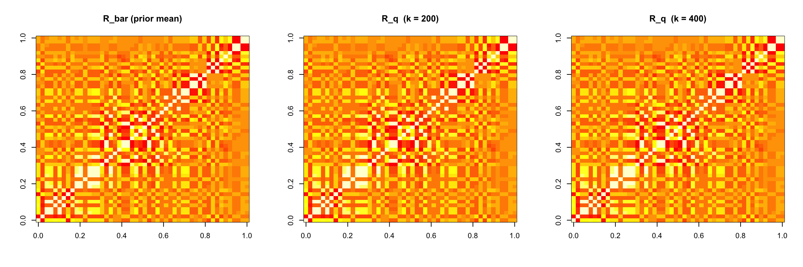
par(mfrow = c(1, 1))diff_200_bar <- (R_q_200 - R_bar)[1:50, 1:50]
diff_400_bar <- (R_q_400 - R_bar)[1:50, 1:50]
diff_400_200 <- (R_q_400 - R_q_200)[1:50, 1:50]
zlim <- range(c(diff_200_bar, diff_400_bar, diff_400_200))
col_div <- colorRampPalette(c("blue", "white", "red"))(50)
layout(matrix(1:4, 1, 4), widths = c(4, 4, 4, 0.6))
par(mar = c(4, 4, 3, 1))
image(diff_200_bar, main = "R_q(k=200) - R_bar", col = col_div, zlim = zlim)
image(diff_400_bar, main = "R_q(k=400) - R_bar", col = col_div, zlim = zlim)
image(diff_400_200, main = "R_q(k=400) - R_q(k=200)", col = col_div, zlim = zlim)
# colour bar
par(mar = c(4, 0.5, 3, 3))
color_vals <- seq(zlim[1], zlim[2], length.out = 50)
image(x = 1, y = color_vals, z = matrix(color_vals, nrow = 1),
col = col_div, xaxt = "n", xlab = "", ylab = "", main = "")
axis(4, las = 1)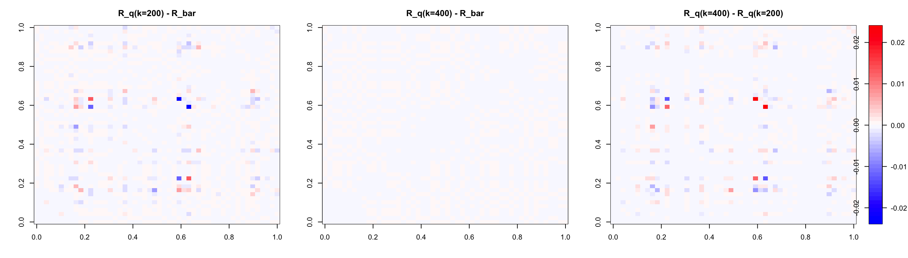
layout(1)
par(mar = c(5, 4, 4, 2) + 0.1)
cat("Max |R_q(k=200) - R_bar| :", round(max(abs(R_q_200 - R_bar)), 5), "\n")
#> Max |R_q(k=200) - R_bar| : 0.02343
cat("Max |R_q(k=400) - R_bar| :", round(max(abs(R_q_400 - R_bar)), 5), "\n")
#> Max |R_q(k=400) - R_bar| : 0.00037
cat("Max |R_q(k=400) - R_q(k=200)|:", round(max(abs(R_q_400 - R_q_200)), 5), "\n")
#> Max |R_q(k=400) - R_q(k=200)|: 0.02361Conclusion: It can be observed that the case \(k = 400\) provides a better approximation
to the prior mean \(\overline{R}\).
However \(R_q\) with $ k = 200$ is not
bad, the maximal difference between elements to \(\overline{R}\) is only 0.02 and it happens
only at a very few elements. But it seems to affect the KL divergence a
lot. This KL divergence enters the loss of susie-love through the term
cov (divided by \(J =
500\)).
cat("k = 400 | KL:", round(KL_400, 4), "\n")
#> k = 400 | KL: 0.7469
cat("k = 200 | KL:", round(KL_200, 4), "\n")
#> k = 200 | KL: 26841.08However, term fit is not affected much by the rank.
fit_200 <- susie_suff_stat(
XtX = N * R_q_200,
Xty = N * v,
n = N,
yty = N
)
#> Warning in susie_suff_stat(XtX = N * R_q_200, Xty = N * v, n = N, yty = N): IBSS algorithm did not converge in 100 iterations!
#> Please check consistency between summary statistics and LD matrix.
#> See https://stephenslab.github.io/susieR/articles/susierss_diagnostic.html
susie_plot(fit_200, y = "PIP", b = beta_true, main = "Out-of-sample R_q_200")
b_bar = colSums(fit_200$alpha, fit_200$mu)
epsilon = v - R_q_200 %*% b_bar
fit_term_200 = N * t(epsilon) %*% solve(R_q_200, epsilon) / J
fit_term_200
#> [,1]
#> [1,] 258.5284fit_400 <- susie_suff_stat(
XtX = N * R_q_200,
Xty = N * v,
n = N,
yty = N
)
#> Warning in susie_suff_stat(XtX = N * R_q_200, Xty = N * v, n = N, yty = N): IBSS algorithm did not converge in 100 iterations!
#> Please check consistency between summary statistics and LD matrix.
#> See https://stephenslab.github.io/susieR/articles/susierss_diagnostic.html
susie_plot(fit_400, y = "PIP", b = beta_true, main = "Out-of-sample R_q_400")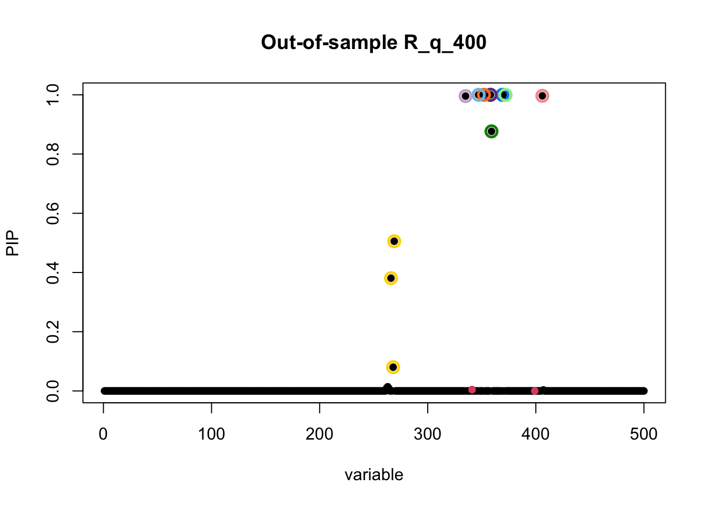
b_bar = colSums(fit_400$alpha, fit_400$mu)
epsilon = v - R_q_400 %*% b_bar
fit_term_400 = N * t(epsilon) %*% solve(R_q_400, epsilon) / J
fit_term_400
#> [,1]
#> [1,] 268.7709In the next workflowr, we will use the fit error to propose an automatic choice for \(k\). My takeaway now is it actually quite delicate to work with the KL divergence between IW of \(J \times J\) covariance matrices. But we are getting there!!!
sessionInfo()
#> R version 4.3.2 (2023-10-31)
#> Platform: aarch64-apple-darwin20 (64-bit)
#> Running under: macOS 26.2
#>
#> Matrix products: default
#> BLAS: /System/Library/Frameworks/Accelerate.framework/Versions/A/Frameworks/vecLib.framework/Versions/A/libBLAS.dylib
#> LAPACK: /Library/Frameworks/R.framework/Versions/4.3-arm64/Resources/lib/libRlapack.dylib; LAPACK version 3.11.0
#>
#> locale:
#> [1] en_US.UTF-8/en_US.UTF-8/en_US.UTF-8/C/en_US.UTF-8/en_US.UTF-8
#>
#> time zone: America/New_York
#> tzcode source: internal
#>
#> attached base packages:
#> [1] stats graphics grDevices utils datasets methods base
#>
#> other attached packages:
#> [1] susielove_0.1.0 susieR_0.14.2 workflowr_1.7.1
#>
#> loaded via a namespace (and not attached):
#> [1] sass_0.4.10 generics_0.1.4 stringi_1.8.7 lattice_0.22-7
#> [5] digest_0.6.39 magrittr_2.0.3 evaluate_1.0.5 grid_4.3.2
#> [9] RColorBrewer_1.1-3 fastmap_1.2.0 plyr_1.8.9 rprojroot_2.1.1
#> [13] jsonlite_2.0.0 Matrix_1.6-1.1 processx_3.8.6 whisker_0.4.1
#> [17] reshape_0.8.10 mixsqp_0.3-54 ps_1.9.1 promises_1.5.0
#> [21] httr_1.4.7 scales_1.4.0 jquerylib_0.1.4 cli_3.6.5
#> [25] rlang_1.1.6 crayon_1.5.3 withr_3.0.2 cachem_1.1.0
#> [29] yaml_2.3.10 otel_0.2.0 tools_4.3.2 dplyr_1.1.4
#> [33] ggplot2_3.5.2 httpuv_1.6.16 reticulate_1.42.0 vctrs_0.6.5
#> [37] R6_2.6.1 png_0.1-8 matrixStats_1.5.0 lifecycle_1.0.4
#> [41] git2r_0.36.2 stringr_1.6.0 fs_1.6.6 irlba_2.3.5.1
#> [45] pkgconfig_2.0.3 callr_3.7.6 pillar_1.11.1 bslib_0.9.0
#> [49] later_1.4.2 gtable_0.3.6 glue_1.8.0 Rcpp_1.1.0
#> [53] tidyselect_1.2.1 xfun_0.52 tibble_3.3.0 rstudioapi_0.17.1
#> [57] knitr_1.50 farver_2.1.2 htmltools_0.5.8.1 rmarkdown_2.29
#> [61] compiler_4.3.2 getPass_0.2-4